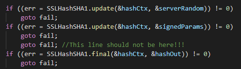
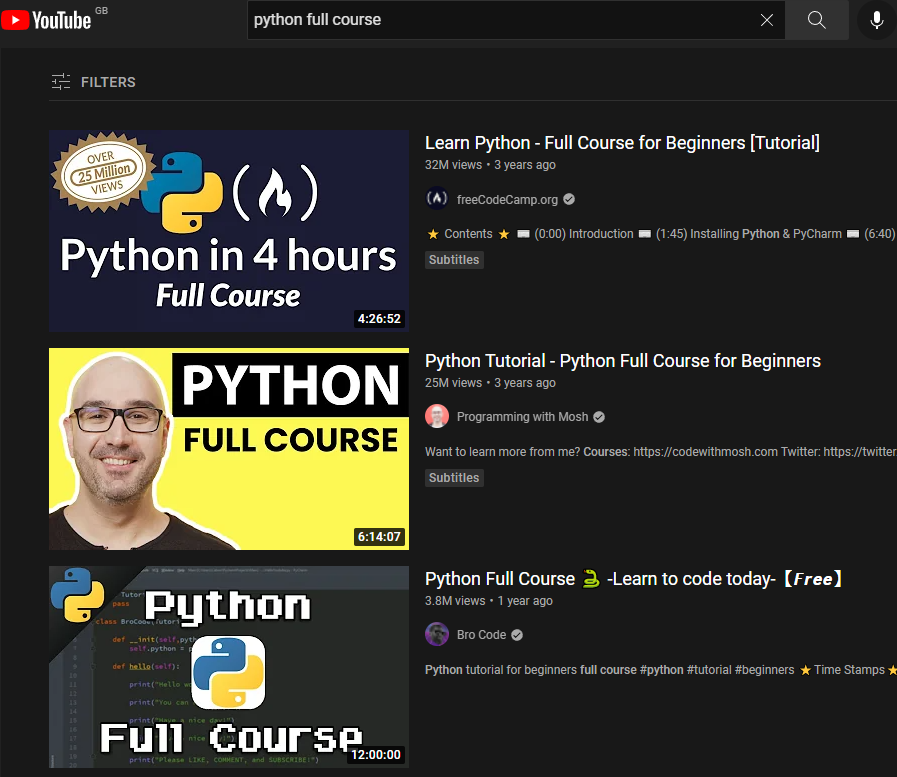
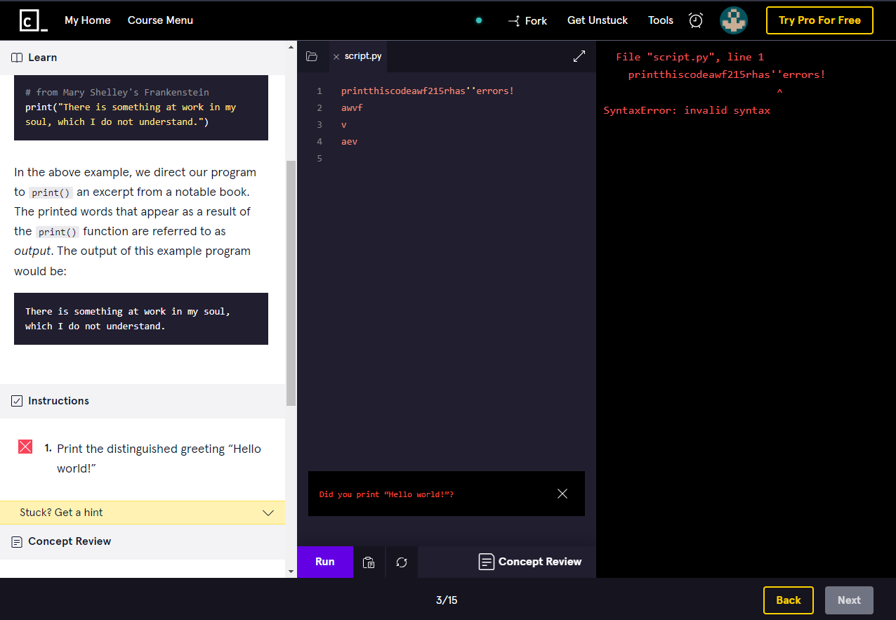

Programming
Table of contents
1. Learning to Program
Another resource (well topic) I recommend looking into is programming languages. As someone in the penetration testing scene, it is generally recommended by the community that you should have a basic understanding of programming. This doesn’t mean you should be able to breathe binary but being able to read code is fine.
By being able to read code you can understand how an exploit program works. By understanding how the exploit works,
you can modify the code as needed so it suits your need.
Alternatively, if the code is outdated/does not work, by
knowing the code you’ll have the means to (try to) repair it yourself. This is especially useful when you use a
niche exploit that is no longer maintained.
Furthermore, by being able to understand the code you can see if the
exploit itself is malicious TO YOU. Although it is quite rare, it’s not unheard-of exploits to be used against
the user themselves.
Later on, when you become more advanced, you can start reading the code of applications and programs themselves,
looking for any vulnerabilities in the code.
This could simply be looking for typos in the code to poor programming.
An example of a real vulnerability is the Apple SSL/TLS issue in 2014, in which an extra line of ‘goto fail’ was
added when it should not have, bypassing the need for SSL verification (see below for an example).
This allowed attackers to potentially redirect users to fake HTTPS sites.

Unfortunately, there is no ‘best’ language so I cannot just recommend a single language. In addition to this, there are a lot of exploits out there, and they all also don’t follow the same programming language. I also recommend you take your time when it comes to learning these languages, otherwise you may exert yourself.
Below is a list of programming languages I recommend you take a look at. All of these are widely used so you will more than likely see them in your time during penetration testing, and learning one should be enough to be able to read code:
- Python
- PHP
- Perl
- Java
- C
- HTML
- JavaScript (not the same as Java) - mostly for website exploits
I recommend starting with Python. In my opinion, it is the easiest programming language in the list.
Just to reiterate, you’re not expected to fully learn these languages, just having a basic understanding
that allows you to read and make small changes as needed is enough for now.
Learning all the languages to
the full extent would also be quite difficult (and time consuming). As a plus, knowing multiple programming languages
does make your CV look better!
2. Finding teaching material
To Contents Table
One way of finding teaching material is to look for online programming books using Google (or from asking around
in programming communities, for example a python community can be found on Reddit called ‘r/python’).
When looking
for these books, keep in mind how old the book is, and that it’s not too outdated for your programming language
(it doesn’t have to be a 1-to-1 version, but some languages can have big differences if the version difference
is wide enough).
Another good place to find learning content for programming is YouTube. Enter
‘ProgrammingLanguage_XYZ full course’ into Youtube, and a list of courses (ranging from an hour to more than ten hours)
can be found. Here is the query for Python. You are welcome to play around with the search terms to look for video
courses (sites like Udemy can also be used).

The issue with this method is – there’s not really any
questions/worksheets to try. As such, to supplement your teaching by looking for online
worksheets (using the same method on Google, I found W3Schools provide online exercise for Python), or
using sites like CodeAcademy.
Following on from before, I also recommend taking a look at sites like ‘CodeAcademy’, offering a teaching-based platform for programming
languages and offering a Q&A based worksheet system, checking the code you have written is correct
(and if it is incorrect, offers you hints).

3. Overall
To Contents Table
Learning a programming language will help you out a significant amount in the future when it comes to
understanding and reading code, whether it is adapting an exploit to work against a particular vulnerability
to looking for vulnerabilities/badly done programming in a website.
It will also help out when you start
making your own scripts and exploits.